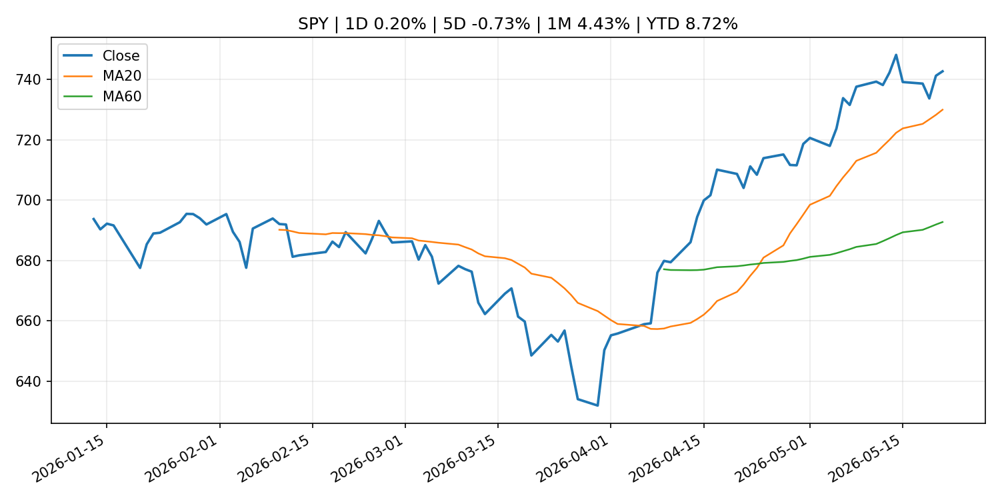
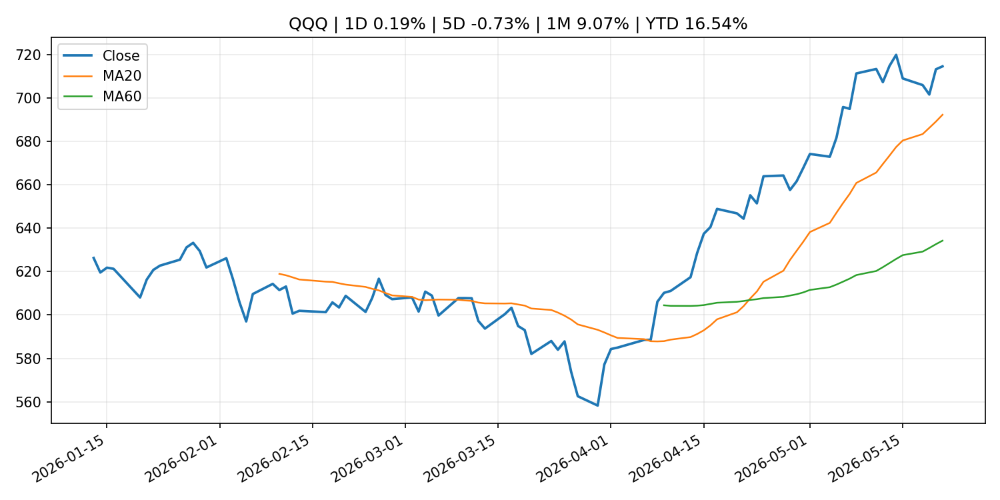
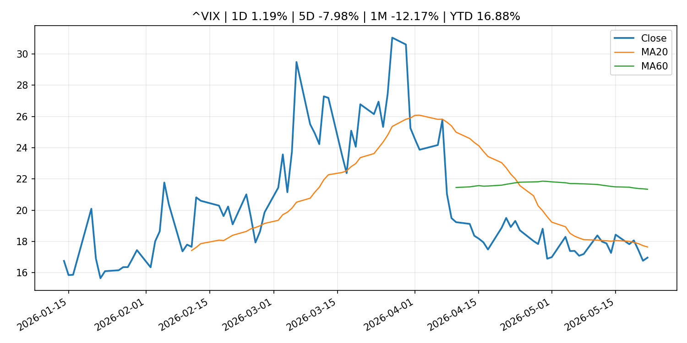
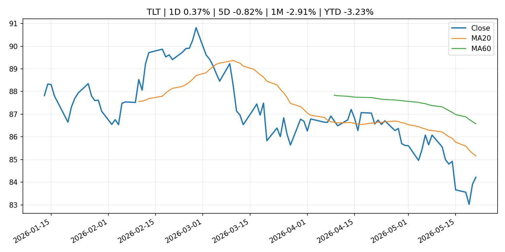
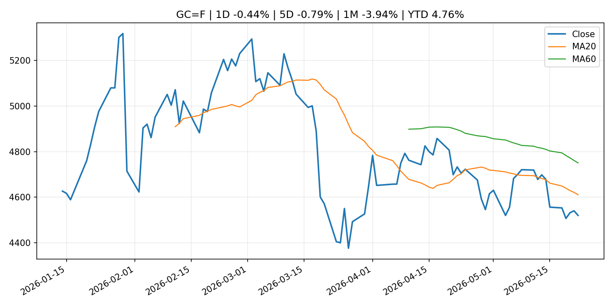
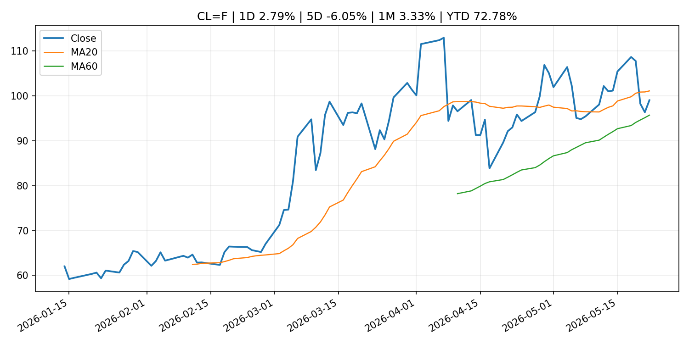
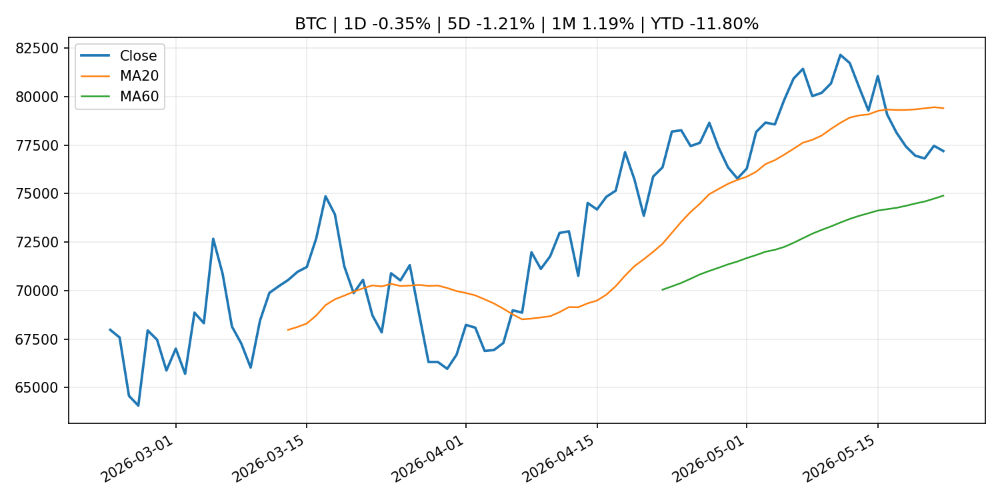
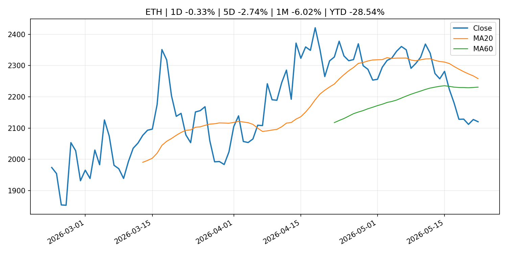

Global Macro Morning Briefing - 2026-05-22
Not financial advice / 非投资建议。
0. 今日总览
- 市场状态：unknown。市场信号不足，暂不判断明确状态。
- 今日三大主线：
- central_bank_decision: Fed officials see rate hike ahead if inflation stays elevated, minutes show
- fiscal_policy: Real estate mogul Mauricio Umansky says ‘Reaganomics’ is the answer to housing affordability problem
- geopolitical_risk: Satoshi’s 1.1 million bitcoin and millions more can be saved from quantum attack, says expert
- 一句话结论：今日晨报重点关注：央行决策会重定价利率、汇率、久期资产和风险资产。；财政和贸易政策会影响增长、通胀、企业利润和跨境资本流。。跨资产方面，SPY 1D 0.20%；QQQ 1D 0.19%；^VIX 1D 1.19%；TLT 1D 0.37%；GC=F 1D -0.44%；CL=F 1D 2.79%；BTC 1D -0.35%；ETH 1D -0.33%；市场信号不足，暂不判断明确状态。政策、通胀、利率、美元、美债、能源和加密监管仍是主要观察线索。所有结论仅基于公开数据与短摘要整理，不构成投资建议。
1. 隔夜跨资产市场
- 美股：SPY 1D 0.20%，QQQ 1D 0.19%，整体趋势需结合 VIX 和利率确认。
- 美债/美元：TLT 1D 0.37%，美元指数 1D 0.15%，是判断折现率压力的核心线索。
- 黄金/原油：黄金 1D -0.44%，原油 1D 2.79%，用于观察避险、通胀和地缘风险。
- 加密：BTC 1D -0.35%，ETH 1D -0.33%，关注是否独立于纳指走出加密自身行情。
- 港股/A股：恒生 1D 0.86%，沪深300/上证 1D n/a，重点看中国政策预期与人民币线索。
- 风险观察：关注后续数据是否确认当前跨资产信号。
US_EQUITY
| symbol | latest close | 1D | 5D | 1M | YTD | trend |
|---|---|---|---|---|---|---|
| SPY | 742.72 | 0.20% | -0.73% | 4.43% | 8.72% | strong_uptrend |
| QQQ | 714.51 | 0.19% | -0.73% | 9.07% | 16.54% | strong_uptrend |
| DIA | 503.11 | 0.57% | 0.46% | 1.69% | 4.03% | uptrend |
| IWM | 282.49 | 0.94% | -0.69% | 2.17% | 13.55% | uptrend |
| VTI | 365.09 | 0.25% | -0.63% | 3.95% | 8.56% | strong_uptrend |
US_MACRO_MARKET
| symbol | latest close | 1D | 5D | 1M | YTD | trend |
|---|---|---|---|---|---|---|
| ^VIX | 16.96 | 1.19% | -7.98% | -12.17% | 16.88% | strong_downtrend |
| DX-Y.NYB | 99.34 | 0.15% | 0.07% | 0.54% | 0.93% | range_bound |
| TLT | 84.22 | 0.37% | -0.82% | -2.91% | -3.23% | downtrend |
| IEF | 93.80 | 0.06% | -0.49% | -1.80% | -2.37% | downtrend |
COMMODITIES
| symbol | latest close | 1D | 5D | 1M | YTD | trend |
|---|---|---|---|---|---|---|
| GC=F | 4,519.70 | -0.44% | -0.79% | -3.94% | 4.76% | downtrend |
| SI=F | 76.03 | -0.51% | -1.47% | 0.74% | 7.75% | range_bound |
| CL=F | 99.04 | 2.79% | -6.05% | 3.33% | 72.78% | range_bound |
| BZ=F | 106.00 | 3.33% | -2.98% | 0.89% | 74.49% | range_bound |
| NG=F | 3.14 | 4.04% | 6.08% | 20.12% | -13.21% | range_bound |
| HG=F | 6.36 | 1.70% | 1.79% | 4.74% | 12.83% | strong_uptrend |
HK_MARKET
| symbol | latest close | 1D | 5D | 1M | YTD | trend |
|---|---|---|---|---|---|---|
| ^HSI | 25,606.03 | 0.86% | -1.37% | -2.13% | -2.78% | range_bound |
| 0700.HK | 441.40 | 0.55% | -3.29% | -12.42% | -29.15% | strong_downtrend |
| 9988.HK | 127.00 | 0.79% | -4.01% | -3.42% | -14.77% | range_bound |
| 3690.HK | 81.35 | -0.91% | -1.63% | -3.44% | -22.23% | range_bound |
| 1810.HK | 30.00 | 1.15% | -2.28% | -5.66% | -25.52% | strong_downtrend |
| 1211.HK | 91.60 | 1.16% | -5.03% | -14.39% | -7.24% | strong_downtrend |
CRYPTO
| symbol | latest close | 1D | 5D | 1M | YTD | trend |
|---|---|---|---|---|---|---|
| BTC | 77,191.29 | -0.35% | -1.21% | 1.19% | -11.80% | range_bound |
| ETH | 2,120.20 | -0.33% | -2.74% | -6.02% | -28.54% | range_bound |
| SOLANA | 87.13 | 1.30% | 0.71% | 4.95% | -30.03% | range_bound |
| BINANCECOIN | 657.08 | 1.27% | 0.17% | 6.81% | -23.87% | strong_uptrend |
| RIPPLE | 1.36 | -0.22% | -3.63% | -0.38% | -25.95% | range_bound |
| DOGECOIN | 0.11 | 2.17% | -3.25% | -0.63% | -9.82% | range_bound |
2. 今日最重要的 10 条新闻
1. Fed officials see rate hike ahead if inflation stays elevated, minutes show
- 来源：CNBC Economy
- 时间：2026-05-20T19:04:09+00:00
- 地区：US
- 事件类型：central_bank_decision
- 重要性层级：Tier 1
- 一句话摘要：A majority of officials anticipated that interest rate increases would be necessary if the Iran war continued to aggravate inflation.
- 为什么重要：央行决策会重定价利率、汇率、久期资产和风险资产。
- 可能影响：主要影响 DXY，方向为 positive，强度 high；通胀压力可能推高政策利率预期并支撑美元。
- 资产：DXY 方向：positive 强度：high 原因：通胀压力可能推高政策利率预期并支撑美元。
- 资产：TLT 方向：negative 强度：high 原因：通胀上行通常推升收益率、压低长债价格。
- 资产：QQQ 方向：negative 强度：high 原因：更高利率对成长股估值折现率不利。
- 资产：SPY 方向：mixed 强度：medium 原因：名义增长可能支撑收入，但更高利率压制估值。
- 资产：GC=F 方向：mixed 强度：medium 原因：通胀对黄金是支撑，但实际利率上行会形成压力。
- 资产：BTC 方向：negative 强度：high 原因：流动性收紧通常压制高 beta 加密资产。
- 原文链接：https://www.cnbc.com/2026/05/20/fed-officials-see-rate-hike-ahead-if-inflation-stays-elevated-minutes-show.html
2. Real estate mogul Mauricio Umansky says ‘Reaganomics’ is the answer to housing affordability problem
- 来源：MarketWatch Top Stories
- 时间：2026-05-22T09:01:00+00:00
- 地区：US
- 事件类型：fiscal_policy
- 重要性层级：Tier 1
- 一句话摘要：Umansky isn’t sold on California’s proposed billionaire tax—warning that the initiative is shortsighted, and could end up doing more harm than good.
- 为什么重要：财政和贸易政策会影响增长、通胀、企业利润和跨境资本流。
- 可能影响：可能影响利率、汇率、风险资产或大宗商品预期，但当前公开信息不足以判断明确方向。
- 资产：暂无明确资产映射
- 方向：unknown
- 强度：low
- 原因：公开信息不足以判断方向。
- 原文链接：https://www.marketwatch.com/story/real-estate-mogul-mauricio-umansky-says-reaganomics-is-the-answer-to-housing-affordability-problem-233fc12d?mod=mw_rss_topstories
3. Satoshi’s 1.1 million bitcoin and millions more can be saved from quantum attack, says expert
- 来源：CoinDesk
- 时间：2026-05-21T19:10:03+00:00
- 地区：global
- 事件类型：geopolitical_risk
- 重要性层级：Tier 1
- 一句话摘要：Satoshi’s 1.1 million bitcoin and millions more can be saved from quantum attack, says expert
- 为什么重要：地缘风险可能推升避险需求、能源价格和市场波动率。
- 可能影响：可能影响利率、汇率、风险资产或大宗商品预期，但当前公开信息不足以判断明确方向。
- 资产：暂无明确资产映射
- 方向：unknown
- 强度：low
- 原因：公开信息不足以判断方向。
- 原文链接：https://www.coindesk.com/tech/2026/05/21/satoshi-s-1-1m-bitcoin-stash-can-be-saved-from-quantum-attack-says-americanfortress
4. (BOJ Review) International Comparison of Life Insurers: Evolving Business Models and Financial Stability Issues
- 来源：Bank of Japan Announcements
- 时间：2026-05-21T14:00:00+09:00
- 地区：Japan
- 事件类型：financial_stability
- 重要性层级：Tier 1
- 一句话摘要：(BOJ Review) International Comparison of Life Insurers: Evolving Business Models and Financial Stability Issues
- 为什么重要：金融稳定信号可能放大跨资产波动，并影响央行反应函数。
- 可能影响：可能影响利率、汇率、风险资产或大宗商品预期，但当前公开信息不足以判断明确方向。
- 资产：暂无明确资产映射
- 方向：unknown
- 强度：low
- 原因：公开信息不足以判断方向。
- 原文链接：http://www.boj.or.jp/en/research/wps_rev/rev_2026/rev26e07.htm
5. (Research Paper) Households' Wage Growth Expectations Formation: The Linkage with Price Inflation Expectations
- 来源：Bank of Japan Announcements
- 时间：2026-05-22T16:00:00+09:00
- 地区：Japan
- 事件类型：research_publication
- 重要性层级：Tier 2
- 一句话摘要：(Research Paper) Households' Wage Growth Expectations Formation: The Linkage with Price Inflation Expectations
- 为什么重要：研究论文通常是背景材料，本身不一定代表即时政策变化。 但标题或摘要同时涉及重大市场主题，因此提升为重要跟踪项。
- 可能影响：主要影响 DXY，方向为 positive，强度 high；通胀压力可能推高政策利率预期并支撑美元。
- 资产：DXY 方向：positive 强度：high 原因：通胀压力可能推高政策利率预期并支撑美元。
- 资产：TLT 方向：negative 强度：high 原因：通胀上行通常推升收益率、压低长债价格。
- 资产：QQQ 方向：negative 强度：high 原因：更高利率对成长股估值折现率不利。
- 资产：SPY 方向：mixed 强度：medium 原因：名义增长可能支撑收入，但更高利率压制估值。
- 资产：GC=F 方向：mixed 强度：medium 原因：通胀对黄金是支撑，但实际利率上行会形成压力。
- 资产：BTC 方向：mixed 强度：medium 原因：抗通胀叙事和流动性收紧可能相互抵消。
- 原文链接：http://www.boj.or.jp/en/research/wps_rev/wps_2026/wp26e09.htm
6. Stocks tread water — but a wave of volatility is building
- 来源：MarketWatch Top Stories
- 时间：2026-05-22T00:21:00+00:00
- 地区：US
- 事件类型：earnings
- 重要性层级：Tier 2
- 一句话摘要：S&P 500 analysis shows technical sell signals are flashing despite Nvidia earnings hype.
- 为什么重要：大型科技股盈利和资本开支会影响纳指、半导体和 AI 交易主线。
- 可能影响：主要影响 QQQ，方向为 mixed，强度 high；AI 资本开支会影响大型科技股盈利和估值预期。
- 资产：QQQ 方向：mixed 强度：high 原因：AI 资本开支会影响大型科技股盈利和估值预期。
- 资产：SMH 方向：mixed 强度：high 原因：AI 投资周期直接影响半导体需求。
- 资产：NVDA 方向：mixed 强度：high 原因：AI 训练和推理需求是英伟达收入预期核心变量。
- 资产：MSFT 方向：mixed 强度：medium 原因：云和 AI 资本开支影响利润率与增长叙事。
- 资产：GOOGL 方向：mixed 强度：medium 原因：AI 投资和搜索商业化影响估值。
- 资产：META 方向：mixed 强度：medium 原因：AI 基建支出与广告效率共同影响市场预期。
- 原文链接：https://www.marketwatch.com/story/stocks-tread-water-but-a-wave-of-volatility-is-building-3a337d90?mod=mw_rss_topstories
7. Nvidia earnings call drama: Will Jensen Huang talk 'Trump' and China chips after Xi summit?
- 来源：CNBC Economy
- 时间：2026-05-20T18:26:47+00:00
- 地区：US
- 事件类型：earnings
- 重要性层级：Tier 2
- 一句话摘要：Both Nvidia's earnings and its commentary on its financial report are expected to be big tests for U.S. equities.
- 为什么重要：大型科技股盈利和资本开支会影响纳指、半导体和 AI 交易主线。
- 可能影响：主要影响 QQQ，方向为 mixed，强度 high；AI 资本开支会影响大型科技股盈利和估值预期。
- 资产：QQQ 方向：mixed 强度：high 原因：AI 资本开支会影响大型科技股盈利和估值预期。
- 资产：SMH 方向：mixed 强度：high 原因：AI 投资周期直接影响半导体需求。
- 资产：NVDA 方向：mixed 强度：high 原因：AI 训练和推理需求是英伟达收入预期核心变量。
- 资产：MSFT 方向：mixed 强度：medium 原因：云和 AI 资本开支影响利润率与增长叙事。
- 资产：GOOGL 方向：mixed 强度：medium 原因：AI 投资和搜索商业化影响估值。
- 资产：META 方向：mixed 强度：medium 原因：AI 基建支出与广告效率共同影响市场预期。
- 原文链接：https://www.cnbc.com/2026/05/18/nvidia-earnings-call-drama-will-jensen-huang-talk-trump-and-china-chips-after-xi-summit.html
8. SEC and NFA Announce Memorandum of Understanding to Further Harmonize Regulatory Coordination
- 来源：SEC Press Releases
- 时间：2026-05-21T08:51:10-04:00
- 地区：US
- 事件类型：regulation
- 重要性层级：Tier 2
- 一句话摘要：The Securities and Exchange Commission (SEC) and National Futures Association (NFA) today announced that they have entered into a Memorandum of Understanding (MOU) to enhance their cooperation, coordination, and information sharing in areas of common…
- 为什么重要：监管变化会改变行业盈利预期和资产风险溢价。
- 可能影响：主要影响 BTC，方向为 mixed，强度 high；加密监管或 ETF 进展会改变 BTC 的资金流和风险溢价。
- 资产：BTC 方向：mixed 强度：high 原因：加密监管或 ETF 进展会改变 BTC 的资金流和风险溢价。
- 资产：ETH 方向：mixed 强度：high 原因：监管框架会影响 ETH 产品化和机构参与度。
- 资产：COIN 方向：mixed 强度：medium 原因：监管清晰度和执法风险会影响交易平台估值。
- 资产：crypto market 方向：mixed 强度：high 原因：信息影响整个加密市场结构，但方向取决于细节。
- 原文链接：https://www.sec.gov/newsroom/press-releases/2026-47
9. Blockchain.com files with SEC for U.S. IPO
- 来源：CoinDesk
- 时间：2026-05-21T13:50:27+00:00
- 地区：global
- 事件类型：regulation
- 重要性层级：Tier 2
- 一句话摘要：Blockchain.com files with SEC for U.S. IPO
- 为什么重要：监管变化会改变行业盈利预期和资产风险溢价。
- 可能影响：主要影响 BTC，方向为 mixed，强度 high；加密监管或 ETF 进展会改变 BTC 的资金流和风险溢价。
- 资产：BTC 方向：mixed 强度：high 原因：加密监管或 ETF 进展会改变 BTC 的资金流和风险溢价。
- 资产：ETH 方向：mixed 强度：high 原因：监管框架会影响 ETH 产品化和机构参与度。
- 资产：COIN 方向：mixed 强度：medium 原因：监管清晰度和执法风险会影响交易平台估值。
- 资产：crypto market 方向：mixed 强度：high 原因：信息影响整个加密市场结构，但方向取决于细节。
- 原文链接：https://www.coindesk.com/business/2026/05/21/blockchain-com-files-confidential-paperwork-with-sec-for-u-s-ipo
10. Federal Reserve Board issues enforcement action with former employee of Commerce Bank
- 来源：Federal Reserve Press Releases
- 时间：2026-05-21T15:00:00+00:00
- 地区：US
- 事件类型：regulation
- 重要性层级：Tier 2
- 一句话摘要：Federal Reserve Board issues enforcement action with former employee of Commerce Bank
- 为什么重要：监管变化会改变行业盈利预期和资产风险溢价。
- 可能影响：可能影响利率、汇率、风险资产或大宗商品预期，但当前公开信息不足以判断明确方向。
- 资产：暂无明确资产映射
- 方向：unknown
- 强度：low
- 原因：公开信息不足以判断方向。
- 原文链接：https://www.federalreserve.gov/newsevents/pressreleases/enforcement20260521a.htm
3. 政策与央行观察
1. Fed officials see rate hike ahead if inflation stays elevated, minutes show
- 来源：CNBC Economy
- 时间：2026-05-20T19:04:09+00:00
- 地区：US
- 事件类型：central_bank_decision
- 重要性层级：Tier 1
- 一句话摘要：A majority of officials anticipated that interest rate increases would be necessary if the Iran war continued to aggravate inflation.
- 为什么重要：央行决策会重定价利率、汇率、久期资产和风险资产。
- 可能影响：主要影响 DXY，方向为 positive，强度 high；通胀压力可能推高政策利率预期并支撑美元。
- 资产：DXY 方向：positive 强度：high 原因：通胀压力可能推高政策利率预期并支撑美元。
- 资产：TLT 方向：negative 强度：high 原因：通胀上行通常推升收益率、压低长债价格。
- 资产：QQQ 方向：negative 强度：high 原因：更高利率对成长股估值折现率不利。
- 资产：SPY 方向：mixed 强度：medium 原因：名义增长可能支撑收入，但更高利率压制估值。
- 资产：GC=F 方向：mixed 强度：medium 原因：通胀对黄金是支撑，但实际利率上行会形成压力。
- 资产：BTC 方向：negative 强度：high 原因：流动性收紧通常压制高 beta 加密资产。
- 原文链接：https://www.cnbc.com/2026/05/20/fed-officials-see-rate-hike-ahead-if-inflation-stays-elevated-minutes-show.html
2. Real estate mogul Mauricio Umansky says ‘Reaganomics’ is the answer to housing affordability problem
- 来源：MarketWatch Top Stories
- 时间：2026-05-22T09:01:00+00:00
- 地区：US
- 事件类型：fiscal_policy
- 重要性层级：Tier 1
- 一句话摘要：Umansky isn’t sold on California’s proposed billionaire tax—warning that the initiative is shortsighted, and could end up doing more harm than good.
- 为什么重要：财政和贸易政策会影响增长、通胀、企业利润和跨境资本流。
- 可能影响：可能影响利率、汇率、风险资产或大宗商品预期，但当前公开信息不足以判断明确方向。
- 资产：暂无明确资产映射
- 方向：unknown
- 强度：low
- 原因：公开信息不足以判断方向。
- 原文链接：https://www.marketwatch.com/story/real-estate-mogul-mauricio-umansky-says-reaganomics-is-the-answer-to-housing-affordability-problem-233fc12d?mod=mw_rss_topstories
3. (BOJ Review) International Comparison of Life Insurers: Evolving Business Models and Financial Stability Issues
- 来源：Bank of Japan Announcements
- 时间：2026-05-21T14:00:00+09:00
- 地区：Japan
- 事件类型：financial_stability
- 重要性层级：Tier 1
- 一句话摘要：(BOJ Review) International Comparison of Life Insurers: Evolving Business Models and Financial Stability Issues
- 为什么重要：金融稳定信号可能放大跨资产波动，并影响央行反应函数。
- 可能影响：可能影响利率、汇率、风险资产或大宗商品预期，但当前公开信息不足以判断明确方向。
- 资产：暂无明确资产映射
- 方向：unknown
- 强度：low
- 原因：公开信息不足以判断方向。
- 原文链接：http://www.boj.or.jp/en/research/wps_rev/rev_2026/rev26e07.htm
4. SEC and NFA Announce Memorandum of Understanding to Further Harmonize Regulatory Coordination
- 来源：SEC Press Releases
- 时间：2026-05-21T08:51:10-04:00
- 地区：US
- 事件类型：regulation
- 重要性层级：Tier 2
- 一句话摘要：The Securities and Exchange Commission (SEC) and National Futures Association (NFA) today announced that they have entered into a Memorandum of Understanding (MOU) to enhance their cooperation, coordination, and information sharing in areas of common…
- 为什么重要：监管变化会改变行业盈利预期和资产风险溢价。
- 可能影响：主要影响 BTC，方向为 mixed，强度 high；加密监管或 ETF 进展会改变 BTC 的资金流和风险溢价。
- 资产：BTC 方向：mixed 强度：high 原因：加密监管或 ETF 进展会改变 BTC 的资金流和风险溢价。
- 资产：ETH 方向：mixed 强度：high 原因：监管框架会影响 ETH 产品化和机构参与度。
- 资产：COIN 方向：mixed 强度：medium 原因：监管清晰度和执法风险会影响交易平台估值。
- 资产：crypto market 方向：mixed 强度：high 原因：信息影响整个加密市场结构，但方向取决于细节。
- 原文链接：https://www.sec.gov/newsroom/press-releases/2026-47
5. Blockchain.com files with SEC for U.S. IPO
- 来源：CoinDesk
- 时间：2026-05-21T13:50:27+00:00
- 地区：global
- 事件类型：regulation
- 重要性层级：Tier 2
- 一句话摘要：Blockchain.com files with SEC for U.S. IPO
- 为什么重要：监管变化会改变行业盈利预期和资产风险溢价。
- 可能影响：主要影响 BTC，方向为 mixed，强度 high；加密监管或 ETF 进展会改变 BTC 的资金流和风险溢价。
- 资产：BTC 方向：mixed 强度：high 原因：加密监管或 ETF 进展会改变 BTC 的资金流和风险溢价。
- 资产：ETH 方向：mixed 强度：high 原因：监管框架会影响 ETH 产品化和机构参与度。
- 资产：COIN 方向：mixed 强度：medium 原因：监管清晰度和执法风险会影响交易平台估值。
- 资产：crypto market 方向：mixed 强度：high 原因：信息影响整个加密市场结构，但方向取决于细节。
- 原文链接：https://www.coindesk.com/business/2026/05/21/blockchain-com-files-confidential-paperwork-with-sec-for-u-s-ipo
6. Federal Reserve Board issues enforcement action with former employee of Commerce Bank
- 来源：Federal Reserve Press Releases
- 时间：2026-05-21T15:00:00+00:00
- 地区：US
- 事件类型：regulation
- 重要性层级：Tier 2
- 一句话摘要：Federal Reserve Board issues enforcement action with former employee of Commerce Bank
- 为什么重要：监管变化会改变行业盈利预期和资产风险溢价。
- 可能影响：可能影响利率、汇率、风险资产或大宗商品预期，但当前公开信息不足以判断明确方向。
- 资产：暂无明确资产映射
- 方向：unknown
- 强度：low
- 原因：公开信息不足以判断方向。
- 原文链接：https://www.federalreserve.gov/newsevents/pressreleases/enforcement20260521a.htm
7. U.S. CFTC secures deal with National Hockey League on prediction market safeguards
- 来源：CoinDesk
- 时间：2026-05-21T15:12:33+00:00
- 地区：global
- 事件类型：regulation
- 重要性层级：Tier 2
- 一句话摘要：U.S. CFTC secures deal with National Hockey League on prediction market safeguards
- 为什么重要：监管变化会改变行业盈利预期和资产风险溢价。
- 可能影响：可能影响利率、汇率、风险资产或大宗商品预期，但当前公开信息不足以判断明确方向。
- 资产：暂无明确资产映射
- 方向：unknown
- 强度：low
- 原因：公开信息不足以判断方向。
- 原文链接：https://www.coindesk.com/policy/2026/05/21/u-s-cftc-secures-deal-with-national-hockey-league-on-prediction-market-safeguards
8. Speech by Board Member KOEDA in Fukuoka (Economic Activity, Prices, and Monetary Policy in Japan)
- 来源：Bank of Japan Announcements
- 时间：2026-05-21T10:30:00+09:00
- 地区：Japan
- 事件类型：central_bank_speech
- 重要性层级：Tier 2
- 一句话摘要：Speech by Board Member KOEDA in Fukuoka (Economic Activity, Prices, and Monetary Policy in Japan)
- 为什么重要：央行官员表态可能影响市场对下一次会议的定价。
- 可能影响：可能影响利率、汇率、风险资产或大宗商品预期，但当前公开信息不足以判断明确方向。
- 资产：暂无明确资产映射
- 方向：unknown
- 强度：low
- 原因：公开信息不足以判断方向。
- 原文链接：http://www.boj.or.jp/en/about/press/koen_2026/ko260521a.htm
4. 市场异动与图表
- Oil 上涨 2.79%
SPY

QQQ

^VIX

TLT

GC=F

CL=F

BTC

ETH

^HSI

5. 华尔街与机构公开观点
- 暂无可靠公开观点。
6. 今日重点关注
- 经济数据：经济数据：暂无可靠公开日历数据；如配置经济日历源后可自动填充。
- 央行讲话：央行讲话：暂无可靠公开日历数据；重点跟踪 Fed、ECB、BoJ、PBOC 官网 RSS。
- 财报：财报：暂无可靠数据。
- 政策事件：政策事件：暂无可靠数据。
- 风险提醒：风险提醒：关注数据源失败项、突发地缘风险、利率和美元的二阶反应。
7. 英文金融表达与宏观概念
- inflation expectations：通胀预期，指家庭、企业或市场对未来通胀的预估。 例句：Inflation expectations can shape wage bargaining and bond yields.
- real yield：实际收益率，名义利率扣除通胀预期后的收益率。 例句：Gold often reacts more to real yields than nominal yields.
- terminal rate：终端利率，市场预期本轮加息周期的最高政策利率。 例句：A higher terminal rate can pressure growth stocks.
- risk-off：避险模式，资金偏向美元、国债、黄金等防御资产。 例句：A geopolitical shock can push markets into risk-off mode.
- market structure：市场结构，指交易、托管、清算、ETF、监管等制度安排。 例句：Crypto market structure rules can affect institutional participation.
- AI capex：AI 资本开支，指云厂商和科技公司投入 AI 基建的支出。 例句：AI capex guidance can move semiconductor stocks.
8. 背景材料
- ‘We have longevity in the family’: My sister is turning 67. Should she wait until 70 to claim Social Security?（MarketWatch Top Stories，other）：“Others say she should start at full retirement age.”
- Bitcoin implied volatility drops to 7 month low despite macro risks（CoinDesk，other）：Bitcoin implied volatility drops to 7 month low despite macro risks
- Japanese Government Bonds Held by the Bank of Japan（Bank of Japan Announcements，other）：Japanese Government Bonds Held by the Bank of Japan
- (Research Paper) Households' Wage Growth Expectations Formation: The Linkage with Price Inflation Expectations（Bank of Japan Announcements，research_publication）：(Research Paper) Households' Wage Growth Expectations Formation: The Linkage with Price Inflation Expectations
- Developments in Real Exports and Real Imports（Bank of Japan Announcements，other）：Developments in Real Exports and Real Imports
- XRP ETFs attract inflows amid wallet surge. bitcoin, ether funds struggle.（CoinDesk，other）：XRP ETFs attract inflows amid wallet surge. bitcoin, ether funds struggle.
- Bitcoin trades near $77,700 as analysts eye $75,000 support after liquidation wave（CoinDesk，other）：Bitcoin trades near $77,700 as analysts eye $75,000 support after liquidation wave
- (BOJ Review) Developments in and Characteristics of Japan's FX Market: An Analysis Based on the 2025 BIS Triennial Central Bank Survey（Bank of Japan Announcements，other）：(BOJ Review) Developments in and Characteristics of Japan's FX Market: An Analysis Based on the 2025 BIS Triennial Central Bank Survey
- Philip R. Lane: Europe and the world economy（ECB Press Releases，other）：Philip R. Lane: Europe and the world economy
- Bank of Japan Accounts (May 20)（Bank of Japan Announcements，routine_announcement）：Bank of Japan Accounts (May 20)
- (Research Paper) How Do Floods Affect Banks' Financial Conditions? Evidence from Japan（Bank of Japan Announcements，research_publication）：(Research Paper) How Do Floods Affect Banks' Financial Conditions? Evidence from Japan
- (Research Paper) Beyond the Floodplain: Uncovering the Spatial Spillovers of Land Price Declines after Typhoon Hagibis（Bank of Japan Announcements，research_publication）：(Research Paper) Beyond the Floodplain: Uncovering the Spatial Spillovers of Land Price Declines after Typhoon Hagibis
- Miner Perpetua Resources secures $2.9 billion U.S. loan for Idaho gold, antimony project（CNBC Economy，other）：Mining company Perpetua Resources has secured a $2.9 billion loan from the U.S. Export-Import Bank as the U.S. looks to secure access to critical minerals.
- Mark Cuban says he sold most of his Bitcoin after failed hedge narrative 'disappointed' the billionaire（CoinDesk，other）：Mark Cuban says he sold most of his Bitcoin after failed hedge narrative 'disappointed' the billionaire
- Crypto prediction markets are turning into dangerous national security risks, and Congress wants to ban them（CoinDesk，other）：Crypto prediction markets are turning into dangerous national security risks, and Congress wants to ban them
- Frank Elderson: A central banker’s perspective on climate change and nature degradation（ECB Press Releases，other）：Frank Elderson: A central banker’s perspective on climate change and nature degradation
- Live markets: Yet another Iran peace deal and Mark Cuban sells his bitcoin（CoinDesk，other）：Live markets: Yet another Iran peace deal and Mark Cuban sells his bitcoin
- Bitcoin's long-term holder supply approaches record high, breaking multi-year downtrend（CoinDesk，other）：Bitcoin's long-term holder supply approaches record high, breaking multi-year downtrend
- Stablecoins retain the edge over tokenized money market funds, JPMorgan says（CoinDesk，other）：Stablecoins retain the edge over tokenized money market funds, JPMorgan says
- It's not all HYPE: Privacy and quantum-resistant coins advance as bitcoin coasts（CoinDesk，other）：It's not all HYPE: Privacy and quantum-resistant coins advance as bitcoin coasts
9. 数据源、失败项与免责声明
- 采集时间：2026-05-22T09:31:40
- 数据源：公开 RSS、Yahoo Finance、CoinGecko、AKShare、FRED、SEC data.sec.gov，以及用户自有 inputs/reports 文件。
- 合规说明：不绕过 WSJ、Bloomberg、FT、Reuters 等付费墙；对付费媒体只使用公开 RSS 标题、摘要、链接和发布时间。
- 免责声明：Not financial advice / 非投资建议。本项目仅供个人学习、研究和信息整理，不构成投资建议、交易建议或任何收益承诺。
- 失败或跳过的数据源：
- China market data failed symbol=上证指数: empty dataframe
- China market data failed symbol=深证成指: empty dataframe
- China market data failed symbol=创业板指: empty dataframe
- China market data failed symbol=沪深300: empty dataframe
- China market data failed symbol=中证500: empty dataframe
- China market data failed symbol=科创50: empty dataframe
- FRED_API_KEY not set; skipping FRED macro series
- SEC failed cik=0000320193
- SEC failed cik=0000789019
- SEC failed cik=0001045810
- SEC failed cik=0001318605
- SEC failed cik=0001577552